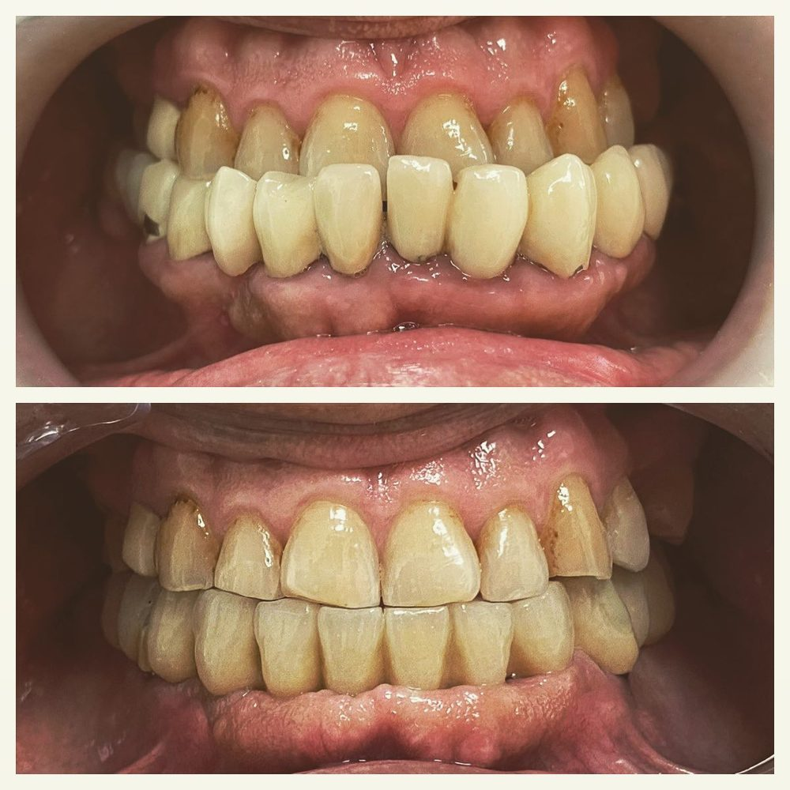
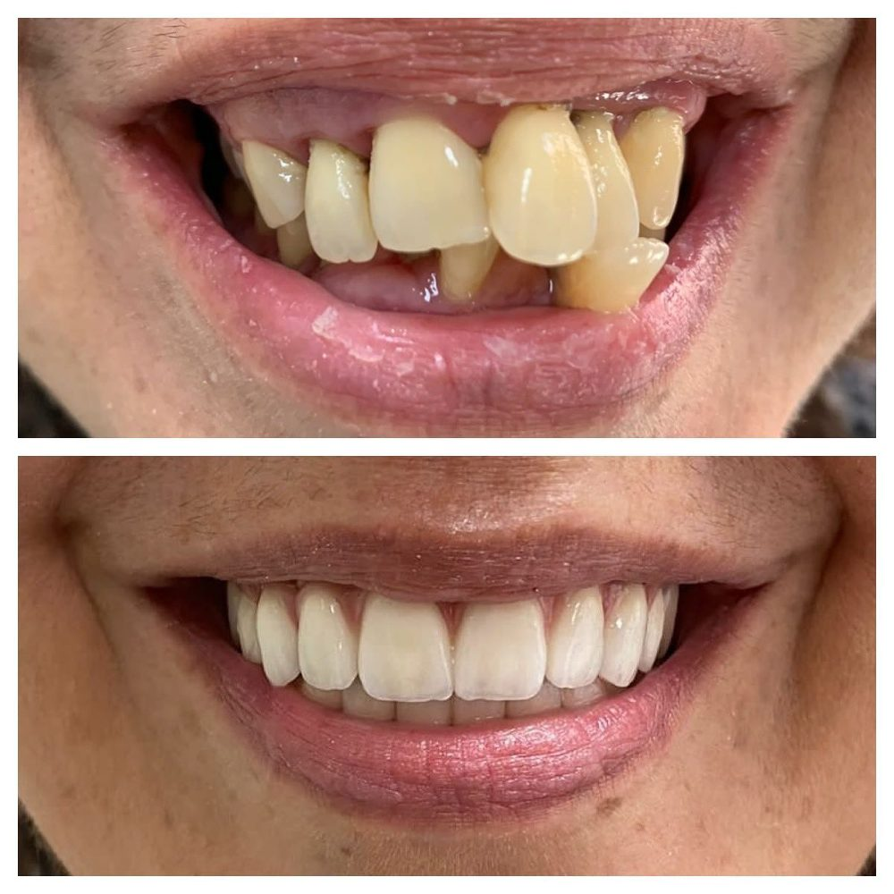

Odontología general
Revisiones, limpiezas y empastes para toda la familia. La base de una boca sana durante toda la vida.
Pedir cita →Clínica dental en Cáceres · Av. París, 29
En Clínica Dental París, el Dr. Luis Fco. García Serrano y su equipo cuidan de tu salud bucodental con calma, cercanía y explicándote cada paso. Sin prisas, sin sustos y con un trato que nuestros pacientes describen como inmejorable.

“Jamás me había sentido tan a gusto en un dentista.”
— Ana Cristina, pacienteConoce al doctor
Odontólogo y director de Clínica Dental París. Luis entiende la odontología como un trato de persona a persona: escuchar primero, explicar después y tratar solo cuando tú lo tienes todo claro.
Sus pacientes lo repiten una y otra vez en sus reseñas: te explica cada paso de lo que va a hacer, se asegura de que la anestesia haga efecto al 100 % antes de empezar y está pendiente de ti durante toda la intervención. Si el dentista te impone respeto, este es tu sitio.
Tratamientos
Desde la revisión rutinaria hasta la rehabilitación completa de tu sonrisa.
Revisiones, limpiezas y empastes para toda la familia. La base de una boca sana durante toda la vida.
Pedir cita →Carillas y diseño de sonrisa para corregir forma, color y alineación con resultados naturales.
Pedir cita →Recupera el blanco de tus dientes de forma segura y controlada, en clínica o combinado en casa.
Pedir cita →Sustituimos dientes perdidos por implantes fijos que se ven, sienten y funcionan como los tuyos.
Pedir cita →Prótesis completas fijas y removibles con un trabajo minucioso, para volver a comer y sonreír sin miedo.
Pedir cita →Brackets y alineadores transparentes para conseguir una sonrisa alineada a cualquier edad.
Pedir cita →Tratamos el interior del diente para salvar piezas dañadas y decir adiós al dolor sin extraer.
Pedir cita →Cuidado de las encías: tratamos el sangrado, la piorrea y la sensibilidad para proteger tus dientes.
Pedir cita →¿Dolor agudo, rotura o infección? Llámanos y te atendemos lo antes posible, como siempre hemos hecho.
Llamar ahora →Antes y después
Casos reales de pacientes tratados en la clínica por el Dr. García Serrano.

Antes / DespuésPrótesis completa fija: de una dentadura muy deteriorada a volver a sonreír y masticar con total seguridad.
 Antes / Después
Antes / Después
Higiene profunda y cuidado periodontal: encías más sanas y dientes visiblemente más limpios y uniformes.

Antes / DespuésTransformación estética completa: dientes alineados, blancos y naturales que cambian toda la cara.
Cada boca es distinta: en tu primera visita estudiamos tu caso y te proponemos un plan a tu medida.
Opiniones
“Cualquier reseña se queda corta: paciencia, profesionalidad, amabilidad… te explica todo a la perfección. Jamás me había sentido tan a gusto en un dentista. Te pone anestesia hasta estar 100 % seguro de que no sientes nada, y aun así lo hace con mucho mimo. No me pondría en otras manos. Su equipo, encantador también.”
“Está ubicado en un buen sitio para aparcar, el trato es estupendo y son unos profesionales. Fue el único centro que nos atendió con una urgencia en pleno COVID; me atendió también estando embarazada, preocupándose en todo momento por nuestra salud. Lo recomiendo siempre.”
“¡Grandes profesionales! Luis te explica todo, paso a paso, lo que va a hacerte para que la intervención sea lo más cómoda posible. Para una persona que le tiene algo de respeto al dentista, me ha ido muy bien con él.”
“Increíble trato y profesionalidad por parte de todos. El doctor, una maravilla: en todo momento pendiente de ti, hablándote para ver si todo está bien y que estés tranquilo y cómodo. Sin duda volveré.”
“Siempre me atendieron con amabilidad, haciéndome sentir muy cómodo en la clínica. El personal es de diez. Lo recomiendo.”
“Atención inmejorable, gran profesional y buen equipo. Estoy súper contenta con mi prótesis completa fija: trabajo minucioso y siempre mirando por el paciente. Lo recomiendo 100 %. Siempre agradecida por poder lucir mis dientes. ☺”
Reserva online
Elige día y hora según nuestro horario real y confirma por WhatsApp. Nosotros te respondemos para dejarla cerrada. Así de fácil.
¿Prefieres hablar con nosotros?
Si WhatsApp no se ha abierto, pulsa el botón de abajo. Recuerda: la cita queda pendiente de confirmación por nuestra parte.
Abrir WhatsApp de nuevoDónde estamos
927 04 26 06
675 40 48 71 (también WhatsApp)
| Lunes | 13:00 – 21:00 |
| Martes | 13:00 – 21:00 |
| Miércoles | 8:00 – 16:00 |
| Jueves | 13:00 – 21:00 |
| Viernes | 8:00 – 15:00 |
| Sábado | Cerrado |
| Domingo | Cerrado |
Dudas frecuentes
Lo más rápido es usar el formulario de reserva online: eliges día y hora y confirmas por WhatsApp. También puedes llamarnos al 927 04 26 06 o al 675 40 48 71 en horario de clínica.
Sí. Si tienes dolor agudo, una rotura o una infección, llámanos y buscaremos el primer hueco disponible para atenderte lo antes posible.
Que te tratemos con calma. El Dr. García Serrano te explica cada paso antes de hacerlo y no empieza hasta que la anestesia hace efecto al 100 %. Muchos de nuestros pacientes llegaron con miedo y hoy vienen tranquilos: puedes leerlo en sus reseñas.
Sí, estamos en Av. París (zona Oeste de Cáceres), una zona con aparcamiento cómodo; es algo que nuestros propios pacientes destacan en sus reseñas.
Una revisión completa de tu boca y una explicación clara de tu estado y de las opciones de tratamiento, para que decidas con toda la información y sin ningún compromiso.
Reserva hoy tu cita y déjate cuidar por un equipo que nuestros pacientes puntúan con 5 estrellas.